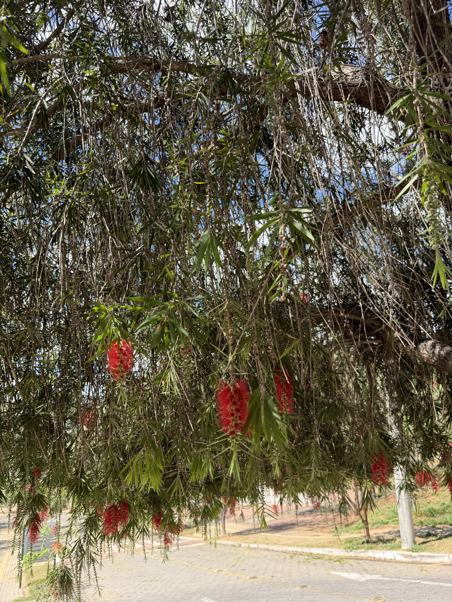
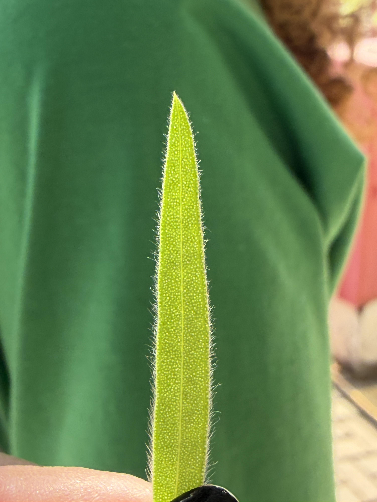
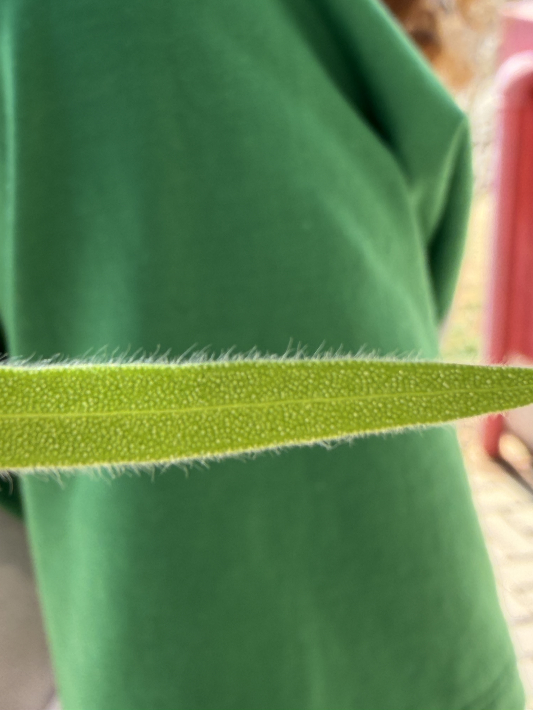
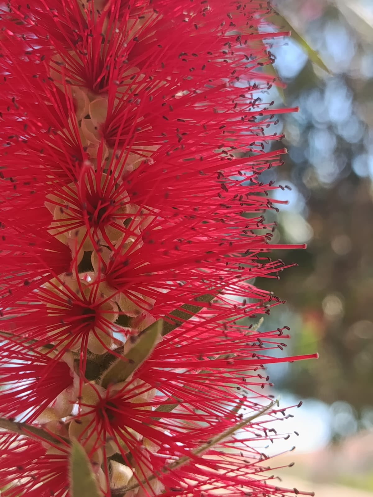

Citrus sp.
NOMES(s) POPULAR(ES)
Limão
GÊNERO
Citrus
FAMÍLIA
Rutaceae
Nomes populares alternativos.
Limoeiro
Imagens




Origem e distribuição geográfica
O gênero Citrus tem origem principalmente em regiões tropicais e subtropicais da Ásia, com representantes também originários da Oceania. Atualmente, os limoeiros são cultivados em diversas partes do mundo, incluindo o Brasil, devido à importância de seus frutos na alimentação.
Status de ocorrência
Exótica no Brasil, pois as plantas cultivadas como limoeiros foram introduzidas no país e não fazem parte da flora originalmente nativa.
Características
O limoeiro apresenta folhas geralmente verdes e brilhantes, com pequenas glândulas que armazenam óleos essenciais, responsáveis pelo aroma cítrico liberado quando são amassadas. Seus ramos podem apresentar espinhos, e suas flores são geralmente brancas, perfumadas e com numerosos estames (estruturas responsáveis pela produção do pólen). O fruto é do tipo hesperídio, um fruto carnoso típico dos citros, caracterizado pela casca rica em óleos aromáticos e pelo interior dividido em gomos, que contêm pequenas bolsas cheias de suco. Dependendo da espécie ou variedade, os frutos podem apresentar diferentes tamanhos, formatos e colorações.
Curiosidades
Você sabia que muitos dos limões que consumimos são resultado de antigos cruzamentos entre diferentes tipos de citros? Esses cruzamentos deram origem a frutos com características variadas de tamanho, sabor, acidez e aroma.
Outra curiosidade é que o aroma característico da casca do limão se deve à presença de substâncias produzidas pela planta, como o limoneno, um dos principais componentes de seus óleos essenciais. Esses compostos também estão envolvidos nas interações da planta com outros organismos.
Localização no
Campus
PRÓXIMO À
Quadra de basquete 3x3
COORDENADA
19°45'34.32"S 44°05'20.10"W